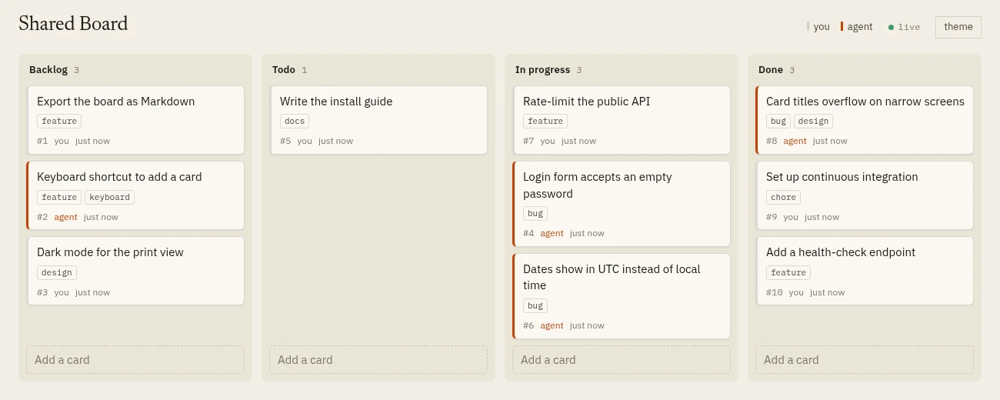

How CLI design changes an AI agent's work
I gave Claude models a kanban board they could only use through a command-line tool, and measured what three designs of that tool change. The agents almost always finished the task. How many wrong commands they typed on the way depended on the design, and so did the cost: the most helpful output made the strongest model more expensive.
The setup
The board is a small web app. People use it in the browser; an agent uses it through a command-line tool called board. Both talk to the same server, so when the agent moves a card, the page shows it moving. Cards the agent changed last get an orange edge.

One run of the experiment starts a fresh board, gives one task to Claude Code running headless, and waits until the agent stops. The agent has one tool, Bash, and may only run board; anything else is refused. A script then compares the final board with the board the task asks for, so a person never judges a run. Every run records whether it succeeded, the agent's tool calls, how many of them failed, and the tokens used.
Three Claude models took part: Haiku 4.5, the oldest and smallest still available; Haiku 5.5; and Sonnet 5.5. The idea of a board with a GUI for people and a CLI for agents is not mine: William Casarin's Headway works the same way. What I wanted to know is how the design of the agent's side changes its work.
Three versions of one CLI
All three versions have the same commands. They differ in what they print and in what they accept. Here is the same mistake in each: the task is to add a label to card 5, and the agent overlooks that label replaces all labels.
plain agent-friendly and forgiving
$ board label 5 urgent $ board label 5 urgent
ok labels of #5 "Login form accepts an empty password" are now: urgent- Plain
- A terse, ordinary CLI: short tables,
okafter a change, bare errors such aserror: no-such-card, and a help text that lists the commands. - Agent-friendly
- The same commands with more words around them. The help gives exact rules and examples (positions count from 1,
labelreplaces all labels,doingis the id of In progress), a change reports what it did, and an error says what to do next. - Forgiving
- Agent-friendly output, and it also accepts what agents guessed in the pilot:
board listforboard show,board show 9for card 9, and column names such as "in progress". Because I designed it from the pilot's mistakes, part of its advantage is built in. The prediction test at the end is there to check how much of it carries over to tasks it was not designed for.
The tasks
There are – tasks on two boards. Twelve use a board of 15 cards, from easy ("move every bug in Todo to In progress") to tasks with a trap: put a card in second place, add a label while keeping the others, or move card #42, which does not exist, so the right answer is to change nothing. Six use a board of 44 cards and need a lot of reading, because the answer is in the descriptions: sort Todo by the priority written in each card, label every card assigned to Sam, or move blocked cards back to Todo when their blocker is not done.
Every task has a reference solution. A test runs each solution through the real CLI and checks that it passes, and that doing nothing fails. That caught one mistake in my own checks before any agent ran.
How the experiment changed on the way
The first plan measured success. In a pilot of – runs on the twelve small tasks, all – succeeded, on both models and both CLI versions I had then. The agents read the help first and looked before they acted, so the traps never caught them. What the pilot did show was wrong commands on the way: board show 9 to see card 9, and board list, which does not exist. Success could not tell the designs apart, but the number of detours could, and detours cost tokens. So the experiment moved to three outcomes: wrong commands, tool calls and tokens, with success kept as a fourth.
The first full round had a flaw of mine. Some agents wrote shell loops (for i in 17 24 35 41; do board archive $i; done). The permission rule allows commands that start with board, so it refused the loops, and – of – runs failed although the agent had found exactly the right cards. I added one sentence to the agent's instructions, the same for every version: loops are refused, run one command at a time or chain them with &&. Because that changes the instructions, I left that round out of the analysis and ran the experiment again.
The main run: every task with every model and every CLI, twice, – runs in 16 minutes and – million tokens, most of them cached. – succeeded. Both failures came from Haiku 4.5, which missed a card in one task and moved one card too many in another.
What went wrong on the way
A wrong command is a tool call that failed: the CLI refused it, or the permission rule did. Most of them are guesses at commands that do not exist.
Wrong commands in the main run, by kind
Totals over – runs per CLI version (three models, 18 tasks, twice).
Two rows deserve a closer look. --position 0 only happened with the plain CLI. Its help says --position N and nothing more, so agents guessed that counting starts at 0; the other versions say it starts at 1, and nobody made that mistake there. That effect is not built into the design.
The #id row is a mistake in my own help text. The agent-friendly help says card ids can be written as 12 or #12. In a shell, # starts a comment, so board card #12 reaches the CLI as board card. The two versions that show that sentence account for most of these errors. Advice that is correct for the program can be wrong for the shell the agent types it into.
The model
The raw counts point one way, but the tasks differ a lot. Sorting Todo by priority takes twenty commands; adding a card takes two. An average over all runs would mostly measure the hard tasks. So each outcome gets a hierarchical model that estimates task difficulty separately and measures the CLI's effect within tasks.
For every run, the model computes one number, η, on a scale where effects can be added:
η = θ[model, CLI] + u[task] + w[task, CLI]
- θ[model, CLI]
- The level for one model with one CLI version on a typical task. Nine values, one per combination, each with the same wide prior.
- u[task]
- How much harder or easier a task is than the typical one. The tasks share a spread, σtask, which the model estimates too, so the tasks inform each other.
- w[task, CLI]
- How far a CLI's effect on one task differs from its effect on the typical task, with its own spread. The missing-card task, for example, produces its error under every version.
How η becomes a prediction depends on the outcome. For counts (wrong commands, tool calls), exp(η) is the expected count, and a negative binomial distribution adds the run-to-run variation. For tokens and list-price cost, exp(η) is the typical value and a lognormal spread, separate per model, sits around it. For success, η is the log-odds. A CLI's effect is then exp(θ[model, forgiving] − θ[model, plain]): the task terms are the same for both versions and drop out. A value of 0.3 means 70% fewer.
All five models were fitted with PyMC: 4 chains of 1000 draws each, no divergences except one in the success model, and R̂ at most –.
Results
What each CLI version changes, compared with plain
Ratio to the plain CLI on a typical task; dots are posterior means, lines 90% intervals. Left of the line is less.
Wrong commands. The forgiving CLI brings them down to – times plain (90% interval – to –), and it does so for every model; the probability that it lowers them is at least – for each. The agent-friendly CLI alone barely changes the count (–, interval – to –). Clearer help text does little against guessed commands, while accepting the guesses removes most of them.
Tool calls. Both richer versions save calls, – and – over all models, most of all for Haiku 4.5. The help text answers questions the agent would otherwise answer by trying.
Tokens and cost. Here the models part ways. For Haiku 4.5 the richer versions use fewer tokens (– with forgiving). For Sonnet they cost more: – with agent-friendly and – with forgiving, at list price. Sonnet already finishes a typical task in about three commands, so there is little to save, and the longer help and confirmations stay in its context for the rest of the run. More helpful output pays off for a weak model and is overhead for a strong one.
Cost per 1000 typical tasks
Claude Code's list-price estimate; posterior mean and 90% interval. Logarithmic axis.
The choice of model matters far more than the CLI. Haiku 5.5 does a typical task for about a tenth of Sonnet's cost, and the old Haiku 4.5 is the most expensive of the three: it needs more turns and more tokens. Success was high everywhere: no combination has a lower 90% bound below –, and with two failures in 324 runs the model cannot rank them.
Task difficulty
Tool calls per task, compared with a typical task
exp(u[task]) from the tool-call model, with 90% intervals. Logarithmic axis.
The spread between tasks is far larger than any CLI effect. Labelling Sam's cards takes almost four times the tool calls of a typical task, and adding a card half of them. Without the task term, a few extra runs of the hardest tasks would weigh more than the design does.
A prediction, then a test
The forgiving CLI was designed from the pilot's mistakes on the same kind of tasks. To see whether its effect holds elsewhere, I wrote five new tasks after the main run: write a description, rename a card by its title, move a card to the bottom of a column, remove a label everywhere, and move one person's cards. Before running them, I let the model predict the round: each new task gets a difficulty drawn from the fitted spread, and every run is simulated. The predictions were written at commit – and committed before the first held-out run, so the history shows which came first.
Predicted, then measured
Held-out round: 5 tasks, every model and CLI, twice; 90 runs. Bars are the 90% prediction, ticks its median, rings what happened.
All – held-out runs succeeded, and every outcome landed inside its prediction. The token ratios are the stronger part: the model expected the forgiving CLI to save Haiku 4.5 about – of its tokens, and the measured saving was –. The wrong commands are a weak test. The new tasks produced few of them (– in 90 runs), the predictions were wide because the model cannot know how hard new tasks are, and the counts fell at the low end. They also brought guesses the forgiving CLI does not accept, board search and board set, which happened to come up under the agent-friendly version. A forgiving CLI therefore needs updating whenever agents start guessing something new.
Limits
- Claude only, at one moment. Three Claude models through Claude Code, in October 2026. Other model families may guess differently.
- One board and one CLI. Four columns and eight commands. A larger tool, with more to read, may change the balance between helpful output and its cost.
- The forgiving effect is partly built in. It accepts guesses seen in the pilot. The held-out round agrees with the model but is too small to settle how much of the effect carries over.
- Success sits at the ceiling. Every model finished nearly every task, so these tasks separate the models on how they work and say little about whether they finish.
- Cost is Claude Code's list-price estimate. A subscription counts usage differently.
- The token model's tail is too light for Haiku 4.5 with the plain CLI: its observed total is just above the predicted range, because a few runs took much longer than a lognormal expects.
Reproduce it
npm install
node experiment/test-tasks.ts # every task's checks, no agent
node experiment/batch.ts --design full --reps 2 # the main run (Claude Code must be logged in)
uv run experiment/analysis/fit.py --batch <batch> # the five models
uv run experiment/analysis/predict.py # predictions for the held-out round
node experiment/batch.ts --design holdout --reps 2
python3 experiment/analysis/writeup_data.py # data.json for this pageRuns, transcripts and the posterior summaries are in experiment/results and experiment/analysis. Claude Code 2.1.310.